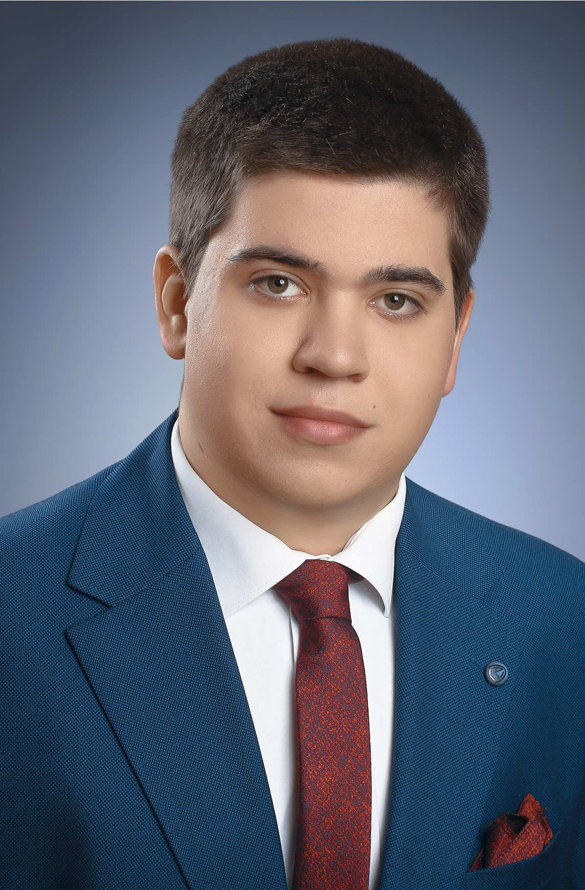

Rólam - Tóth Richárd Adrián

Üdvözlöm az oldalamon!
Tóth Richárd Adrián vagyok, ipari informatikát tanulok az Kecskeméti SZC Kandó Kálmán Technikumban. Tanulmányaim során kiemelten foglalkozom automatizálási rendszerekkel, vezérléstechnikával és informatikai megoldásokkal, különösen az ipari környezetben alkalmazott technológiákkal.
Az informatika és a műszaki rendszerek világa mindig is érdekelt, ezért különösen motivál az olyan projektek készítése, ahol a programozás, a hardveres megoldások és a gyakorlati kivitelezés találkoznak. Portfóliómban olyan munkákat mutatok be, amelyek során PLC vezérléssel, webfejlesztéssel, virtualizált szerver környezetekkel és különböző automatizált rendszerekkel dolgoztam.
Célom, hogy folyamatosan fejlesszem szakmai tudásomat, és a jövőben az ipari informatika, automatizálás vagy rendszergazdai területen helyezkedjek el. Fontos számomra a precíz munkavégzés, a problémamegoldó gondolkodás és az, hogy a megszerzett tudást a gyakorlatban is alkalmazni tudjam.
Elérhetőségeim
tothricsia@gmail.com
+36703036400
Lakitelek, Magyarország
Elsajátított kézségek
HTML
CSS
PYTHON
TIA V17
MYSQL
LINUX